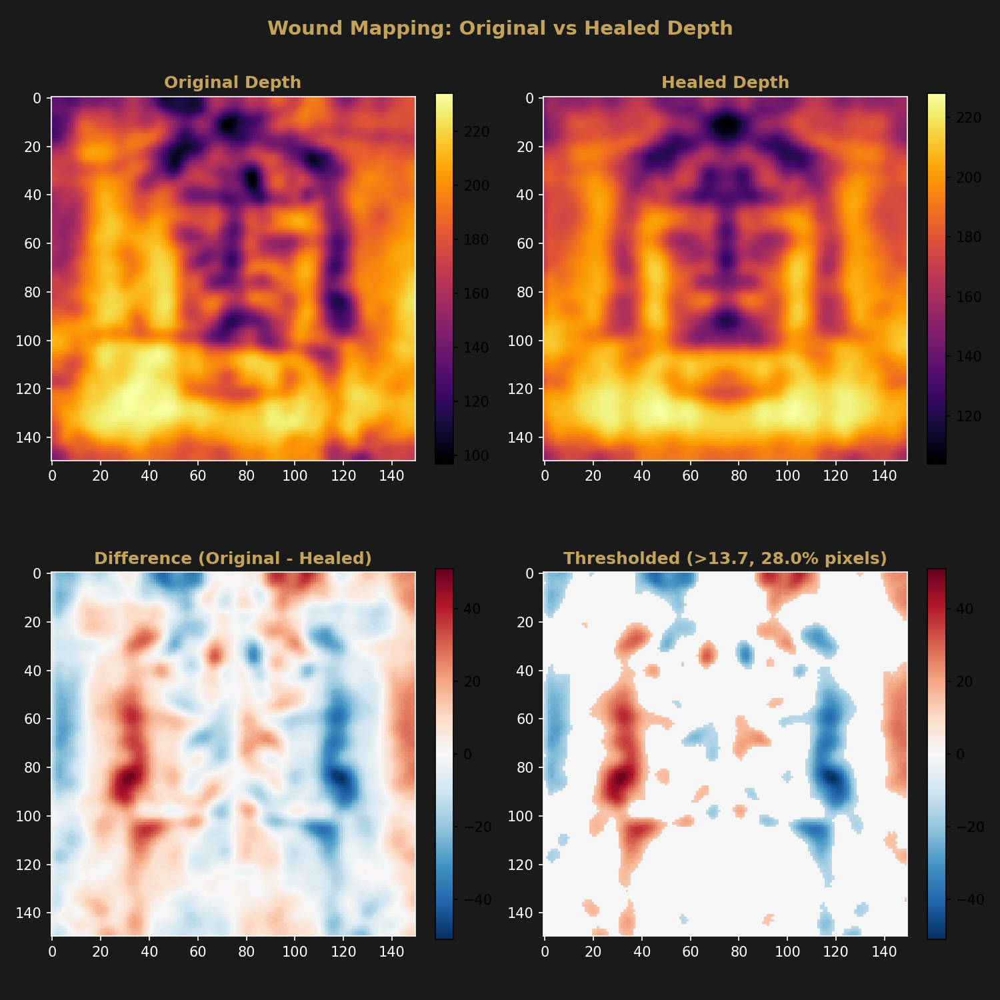
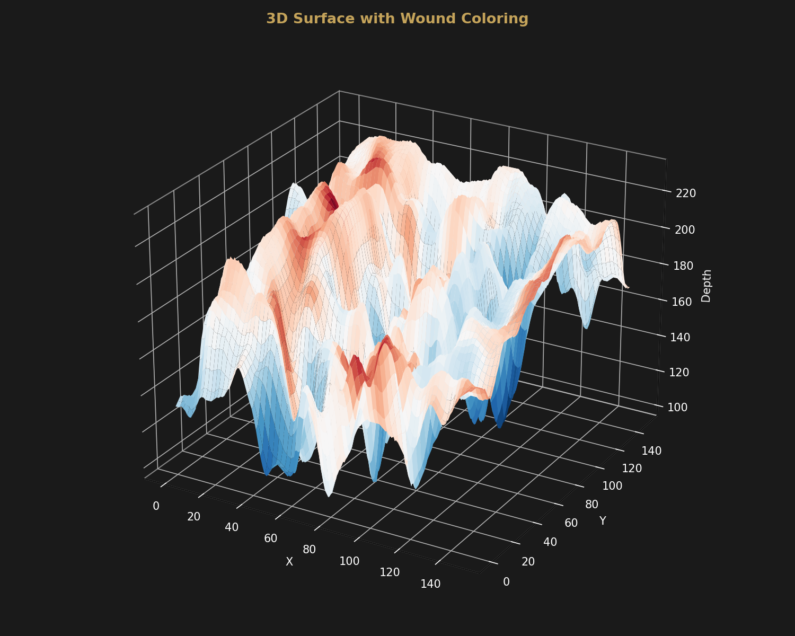
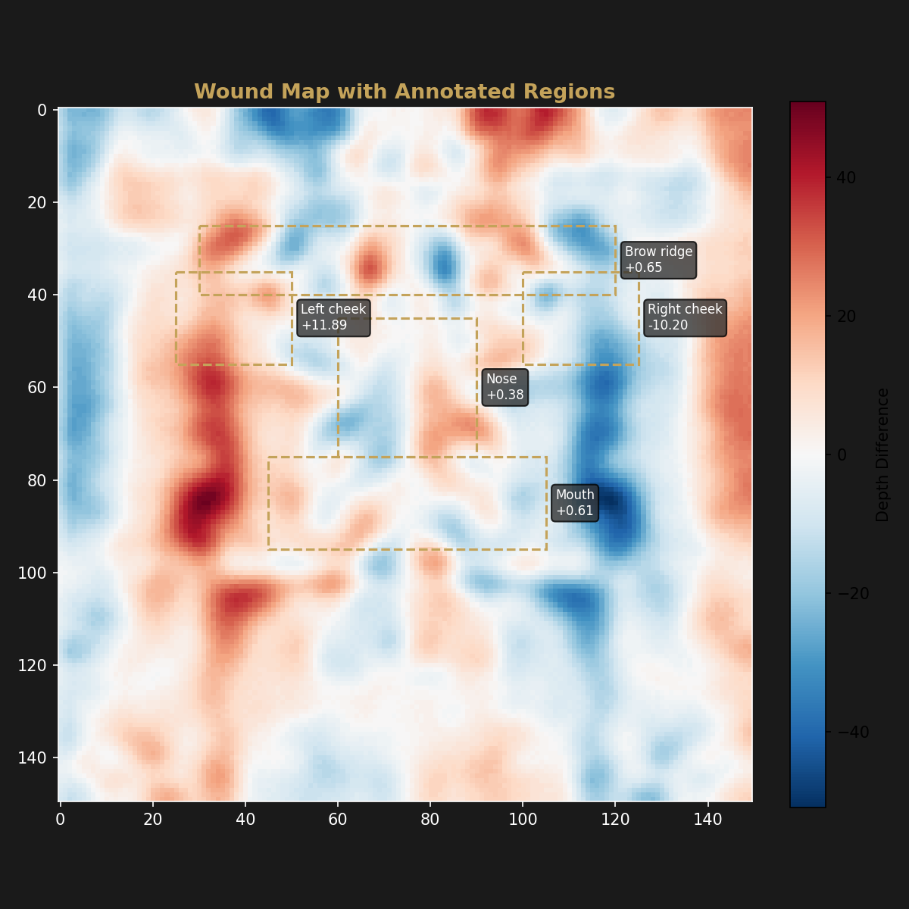

Forensic Analysis
Computational Wound Mapping
Pixel-wise comparison of the original and computationally-healed depth maps reveals the spatial distribution of facial asymmetry.
Method
The original 150×150 Enrie depth map is subtracted from the computationally-healed version (which has bilateral symmetry enforced and surface irregularities smoothed). The resulting difference map highlights regions where the original face deviates from its healed reconstruction. Positive values indicate the original is higher (swelling), negative values indicate it is lower (depression).
Global Statistics
| Metric | Value |
|---|---|
| Asymmetry index (mean |difference|) | 10.51 |
| 1σ threshold | 13.66 |
| Pixels exceeding threshold | 28.01% |
| Max positive deviation (swelling) | +50.0 |
| Max negative deviation (depression) | −51.0 |
| Mean difference | +0.46 |
Regional Breakdown
| Region | Mean Diff | Max | Min | Std Dev |
|---|---|---|---|---|
| Left cheek | +11.89 | +32.0 | −8.0 | 7.74 |
| Right cheek | −10.20 | +12.0 | −31.0 | 8.90 |
| Brow ridge | +0.65 | +32.0 | −33.0 | 14.81 |
| Nose | +0.38 | +24.0 | −23.0 | 10.39 |
| Mouth | +0.61 | +17.0 | −18.0 | 7.80 |
The asymmetry pattern shows a clear left–right disparity: the left cheek has a mean positive deviation of +11.89 (swollen relative to the healed reconstruction), while the right cheek has a mean negative deviation of −10.20. The brow ridge, nose, and mouth regions are approximately symmetric (mean differences near zero) but with high variance, indicating localized irregularities.
This pattern is consistent with the published medical literature describing facial trauma on the Shroud.
Visualizations



Limitations
The asymmetry measured here is the difference between the original depth map and a computationally-healed version. Several factors besides trauma could produce asymmetry in a cloth-contact depth map:
- Cloth contact pressure: Uneven draping or tension in the cloth would produce asymmetric depth readings independent of facial anatomy.
- Body position: A slight head tilt or rotation would introduce systematic left–right differences in cloth-to-body distance.
- Healing algorithm assumptions: The healed reconstruction enforces bilateral symmetry and smoothness, which may over-correct natural anatomical asymmetry present in any human face.
The wound mapping data alone cannot distinguish between these explanations. It should be interpreted alongside the bilateral analysis and in the context of the full body imaging characteristics.